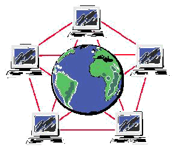
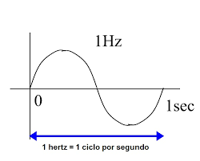
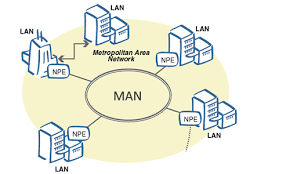
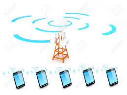
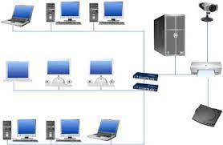
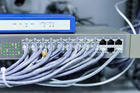
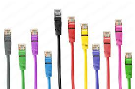
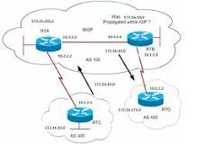

Es una red de computadores contruida en 1969 como un medio resistente para enviar datos militares y conectar principales grupos de investigacion a travez de los estados unidos
A continuación encontrarás las definiciones sobre ciertos aspectos de redes.
Palabras:
ARPANET
batch-procesing
Es una red de computadores contruida en 1969 como un medio resistente para enviar datos militares y conectar principales grupos de investigacion a travez de los estados unidos
NPL
(Network Programming Language): El NPL es un lenguaje de programación utilizado para desarrollar aplicaciones que interactúan con redes de computadoras. Proporciona abstracciones y herramientas específicas para la manipulación de datos en redes, como la transmisión y recepción de paquetes de datos.

Mainframe
mainframes son computadoras de alto rendimiento con grandes cantidades de memoria y procesadores que procesan miles de millones de cálculos y transacciones simples en tiempo real.

time-sharing
El time-sharing es un método de computación que permite a varios usuarios interactuar con una computadora simultáneamente. En un sistema de time-sharing, la CPU se divide en múltiples tareas que se ejecutan de forma intercalada, lo que permite a cada usuario tener la ilusión de que tiene la computadora para sí mismo.

IMP
(Interface Message Processor): Los IMP eran dispositivos utilizados en la primera red de computadoras ARPANET para enrutar y conmutar paquetes de datos entre diferentes nodos de la red. Cada nodo de la red estaba conectado a un IMP, que actuaba como un gateway para la comunicación entre nodos.

NCP
(Network Control Program): El NCP era un protocolo utilizado en la ARPANET para la comunicación entre los nodos de la red y los IMPs. Proporcionaba funcionalidades básicas de comunicación, como la transmisión de datos y el control de errores.

TCP
(Transmission Control Protocol): El TCP es un protocolo de comunicación utilizado en Internet para la transmisión de datos de manera confiable y ordenada entre dispositivos. Junto con el Protocolo de Internet (IP), forma la base del conjunto de protocolos TCP/IP utilizado en Internet.

ISO
ISO (Organización Internacional de Normalización) es una organización que establece estándares internacionales en diversas industrias, incluida la tecnología de la información y las comunicaciones.

Red ciclades
La red de ordenadores CYCLADES era una red de investigación francesa creada en los primeros años de los 70s. Fue una de las redes pioneras que experimentó con el concepto de conmutación de paquetes y fue desarrollada para explorar alternativas al diseño ARPANET. Sostenía la red local de investigación general

arquitectura de red
Una arquitectura de sistemas (también conocido como una arquitectura de la empresa) es un súper conjunto de una arquitectura de red, en la que se describen las relaciones, así como los componentes y funciones importantes del sistema, tales como el almacenamiento

I.P
(Internet Protocol): El IP es un protocolo de comunicación utilizado para enrutar paquetes de datos a través de redes de computadoras. Proporciona identificación y direccionamiento de dispositivos en una red, permitiendo la entrega de datos a su destino correcto.

FTP
FTP es el acrónimo de «Protocolo de Transferencia de Ficheros (en inglés, File Transfer Protocol). FTP es un protocolo que se utiliza para transferir todo tipo de archivos entre equipos conectados a una red, por ejemplo Internet.
SMTP
SMTP significa protocolo simple de transferencia de correo. Se trata de un protocolo de comunicación que se utiliza para enviar y recibir mensajes de correo electrónico a través de Internet.

dominio
Un dominio en Internet es el nombre exclusivo y único que se le da a un sitio web para que cualquier internauta pueda visitarlo e identificarlo.

ISP
(Internet Service Provider): Un ISP es una empresa que proporciona acceso a Internet a sus clientes. Los ISP pueden ofrecer servicios de conexión a Internet, alojamiento web, correo electrónico y otros servicios relacionados con Internet.

DNS
(Domain Name System): El DNS es un sistema utilizado en Internet para traducir nombres de dominio legibles por humanos, como "example.com", en direcciones IP numéricas que las computadoras utilizan para identificar los servidores y los recursos en la red.

repetidores
Un dispositivo analógico que amplifica una señal de entrada, independientemente de su naturaleza (analógica o digital).
emisor
es el componente que se encarga de crear una señal o una petición desde el ordenador.

receptor
Si nos centramos en lo tecnológico, el receptor es el aparato que posibilita la captación y decodificación de señales.
frecuencia
Este término hace referencia al número de veces que los monitores de PC o pantallas LED se actualizan con nuevas imágenes cada segundo. Por ejemplo, un monitor de PC con una frecuencia de refresco de 60 Hz significa que la pantalla se actualiza 60 veces por segundo.

hercio
Unidad de frecuencia del sistema internacional, que equivale a 1 ciclo por segundo. (Símbolo Hz).
WLAN
Una LAN inalámbrica (WLAN) es un tipo de red de área local (LAN) que utiliza la comunicación inalámbrica para conectar cualquier tipo de dispositivo o cliente de red.

PAN
redes personales (Personal Area Network): Una PAN es una red de comunicación que conecta dispositivos cercanos, como computadoras personales, teléfonos inteligentes y dispositivos portátiles. Ejemplos comunes de tecnologías de PAN incluyen Bluetooth y USB.

MAN
red monopolitana (Metropolitan Area Network): Una MAN es una red de comunicación que cubre un área geográfica más grande que una LAN pero más pequeña que una WAN. Por lo general, se utiliza para interconectar varias LAN dentro de una ciudad o área metropolitana, proporcionando servicios de comunicación de alta velocidad y alta capacidad.
radio
La comunicación por radio utiliza ondas electromagnéticas para transmitir datos a través del aire. Estas ondas son generadas por transmisores de radio y recibidas por receptores. La comunicación de radio es utilizada en una amplia variedad de aplicaciones, desde la radiodifusión hasta las comunicaciones móviles.
microondas
Las microondas son un tipo de radiación electromagnética con longitudes de onda más cortas que las de las ondas de radio tradicionales. Se utilizan en comunicaciones de larga distancia y en aplicaciones como las redes inalámbricas de área local (WLAN) y las comunicaciones por satélite.

infrarrojos
El infrarrojo es una forma de radiación electromagnética con longitudes de onda más largas que las de la luz visible pero más cortas que las de las microondas. Se utiliza en dispositivos de comunicación de corto alcance, como los controles remotos de televisión y los enlaces de comunicación punto a punto.

wireless
Este término se refiere a cualquier tipo de comunicación que se realiza sin el uso de cables físicos. Incluye tecnologías como Wi-Fi, Bluetooth y comunicaciones celulares.

red celular
Una red celular es un sistema de comunicación inalámbrica que divide una región en celdas geográficas. Cada celda está servida por una estación base que se comunica con dispositivos móviles dentro de su área de cobertura. Las redes celulares son utilizadas para servicios móviles como llamadas telefónicas, mensajes de texto y acceso a Internet.
red alambrica
Se refiere a una red de comunicación que utiliza cables físicos para conectar dispositivos entre sí. Estos cables pueden ser de diferentes tipos, como cable coaxial, par trenzado o fibra óptica.
wired
Este término se refiere a cualquier tipo de conexión de red que utiliza cables físicos para transmitir datos. Se utiliza comúnmente para distinguir las conexiones cableadas de las inalámbricas.
cable par trenzado
El cable par trenzado es un tipo de cable utilizado en redes de comunicación que consiste en pares de alambres de cobre trenzados entre sí para reducir la interferencia electromagnética.

UTP
cable par trenzado sin blindaje UPT tienes una capa de proteccion menos, es menos seguro para interferencia
STP
cable par trenzado blindado, STP tiene una capa adicional de protección mas que el UTP, para reducir aún más la interferencia.

cable coaxial
El cable coaxial es un tipo de cable que utiliza un conductor central rodeado por un tubo conductor concéntrico. Se utiliza comúnmente en aplicaciones de comunicación de banda ancha, como la televisión por cable e Internet de alta velocidad.

fibra optica
La fibra óptica es un medio de transmisión que utiliza hilos delgados de vidrio o plástico para transmitir datos mediante pulsos de luz. Es conocida por su alta capacidad de transmisión y su inmunidad a la interferencia electromagnética, lo que la hace ideal para redes de alta velocidad y larga distancia.

topologias de red
Las topologías de red se refieren a la estructura física o lógica de una red de comunicación. Algunos ejemplos comunes incluyen la topología de bus, la topología de estrella y la topología de anillo.

WPAN
-Red de Área Personal Inalámbrica- se refiere a redes de corto alcance, como Bluetooth.

WMAN
-Red de Área Metropolitana Inalámbrica- se refiere a redes de área metropolitana, como WiMAX.

WWAN
(Red de Área Amplia Inalámbrica) se refiere a redes de área amplia, como las redes celulares.

Señales satelitales
Las redes satelitales son sistemas de comunicación que utilizan satélites artificiales en órbita alrededor de la Tierra para transmitir datos entre distintos puntos en la superficie terrestre.

TCP-IP
TCP/IP (Protocolo de Control de Transmisión/Protocolo de Internet) es el conjunto de protocolos utilizado para la comunicación en Internet y en muchas otras redes. Se compone de dos protocolos principales: el Protocolo de Control de Transmisión (TCP) y el Protocolo de Internet (IP).

Ondas espectro electromagneticas
El espectro electromagnético es el rango completo de frecuencias de radiación electromagnética, que incluye desde las ondas de radio hasta los rayos gamma. Las diferentes partes del espectro se utilizan en diversas aplicaciones de comunicación y tecnología.

rayos gamma
Los rayos gamma son la forma más energética de radiación electromagnética. Se utilizan en aplicaciones como la radioterapia y la esterilización de alimentos, pero también pueden ser peligrosos para la salud si se exponen en exceso.

radiacion ionizante
La radiación ionizante es cualquier forma de radiación electromagnética que tiene suficiente energía para ionizar átomos y moléculas, lo que puede causar daño celular. Esto incluye rayos X, rayos gamma y ciertas partículas subatómicas.

radiacion no ionizante
La radiación no ionizante es cualquier forma de radiación electromagnética que carece de suficiente energía para ionizar átomos y moléculas. Ejemplos incluyen las microondas, las ondas de radio y la luz visible.

modulador AM
(Amplitud Modulada): Un modulador AM es un dispositivo que modula la amplitud de una señal portadora de alta frecuencia de acuerdo con la amplitud de una señal moduladora de baja frecuencia. Se utiliza en la transmisión de radio AM.

carrier
En comunicaciones, un carrier (portadora) es una señal de alta frecuencia utilizada para transportar una señal modulada. Por ejemplo, en la modulación de amplit

Enrutador
Un enrutador es un dispositivo de red que dirige el tráfico de datos entre diferentes redes. Actúa como un punto de conexión entre varias redes y toma decisiones sobre la mejor ruta para enviar paquetes de datos. .

Gateway
Un gateway es un punto de entrada o salida entre dos redes que permite la comunicación entre ellas. Puede ser un dispositivo físico o un software que facilita la transferencia de datos entre redes con diferentes protocolos.

Firewall
Un firewall es un sistema de seguridad que controla y monitoriza el tráfico de red, permitiendo o bloqueando el acceso a recursos en función de reglas predefinidas. Se utiliza para proteger una red privada de amenazas externas.

VPN
Red privada virtual. Una VPN es una red privada que utiliza una red pública, como Internet, para establecer conexiones seguras y cifradas entre dispositivos remotos. Permite a los usuarios acceder a recursos de red de forma segura como si estuvieran conectados localmente.

Subred
Una subred es una porción de una red IP que ha sido dividida en redes más pequeñas. Se utiliza para organizar y gestionar direcciones IP dentro de una red más grande, mejorando la eficiencia y la gestión de la red.

Transmisión
La transmisión es el proceso de enviar datos desde un dispositivo emisor a un dispositivo receptor a través de una red de comunicación. Implica la codificación, modulación y envío de los datos a través del medio de transmisión.

Recepción
La recepción es el proceso de recibir datos en un dispositivo desde otro dispositivo a través de una red de comunicación. Implica la decodificación y procesamiento de los datos recibidos para su uso por parte del dispositivo receptor.

Switch
Un switch es un dispositivo de red que conecta varios dispositivos en una red local y dirige el tráfico de datos hacia su destino. Permite la comunicación eficiente entre dispositivos al enviar datos solo a los dispositivos específicos que los solicitan.

Proxy
Un proxy es un servidor intermediario que actúa como un punto de acceso entre los usuarios y los servidores de destino. Puede mejorar la seguridad y el rendimiento al cachear contenido, filtrar solicitudes o enmascarar direcciones IP.

DHCP
DHCP es un protocolo de red que asigna direcciones IP automáticamente a dispositivos en una red. Permite a los dispositivos obtener una dirección IP, configuración de red y otros parámetros de manera dinámica sin intervención manual.
visual studio
Visual Studio Code es un editor de código fuente desarrollado por Microsoft. Es multiplataforma, compatible con Windows, macOS y Linux, y es ampliamente utilizado por desarrolladores de software para escribir, editar y depurar código en diversos lenguajes de programación. Ofrece características como resaltado de sintaxis, completado de código, depuración integrada, control de versiones y soporte para extensiones que amplían su funcionalidad. Es conocido por su interfaz de usuario personalizable, rendimiento rápido y amplia comunidad de usuarios y desarrolladores que contribuyen con extensiones y mejoras.

FTP
Protocolo de transferencia de archivos utilizado para transferir datos entre un cliente y un servidor.
Infrarrojos
Tecnología de comunicación inalámbrica que utiliza ondas infrarrojas para transmitir datos.
IP
Descripción
isp
Descripción
ISO
Descripción
mainframe
Descripción.

Router
Dispositivo que dirige el tráfico de datos en una red. Conecta redes diferentes y permite la comunicación entre ellas.
Switch
Dispositivo de red que conecta dispositivos dentro de una misma red, filtrando y redirigiendo datos al destino correcto.
Firewall
Dispositivo o software que controla el acceso y salida de datos en una red, proporcionando seguridad mediante reglas definidas.

VPN
Red privada virtual que permite una conexión segura a otra red a través de Internet.

WAN
Red de área amplia que cubre un área geográfica extensa, como una ciudad, país o incluso el mundo.

LAN
Red de área local que conecta dispositivos en un área limitada, como una oficina o edificio.

MAN
Red de área metropolitana que conecta varios LANs en una región geográfica más amplia, como una ciudad.

Comunicación Satelital
Uso de satélites para transmitir datos y proporcionar servicios de comunicación.

TCP/IP
Conjunto de protocolos de Internet que permiten la comunicación de datos a través de redes.
UDP
Protocolo de datagramas de usuario, utilizado para la transmisión de datos sin conexión y sin garantía de entrega.
MAC
Dirección de control de acceso a medios, un identificador único asignado a la interfaz de red de un dispositivo.
DHCP
Protocolo de configuración dinámica de host que asigna automáticamente direcciones IP a los dispositivos en una red.

HTTPS
Versión segura de HTTP que utiliza cifrado SSL/TLS para proteger la transferencia de datos.
VLAN
Red de área local virtual que agrupa dispositivos en una misma red lógica independientemente de su ubicación física.
QoS
Calidad de servicio, una tecnología que gestiona el tráfico de red para garantizar el rendimiento de aplicaciones críticas.
Ethernet
Tecnología de red utilizada para conexiones LAN, que utiliza cables de par trenzado o fibra óptica.
IPv6
Versión más reciente del Protocolo de Internet, que proporciona un mayor espacio de direcciones que IPv4.
IPv4
Versión del Protocolo de Internet utilizada ampliamente que permite la comunicación de datos mediante direcciones de 32 bits.
ISP
Proveedor de servicios de Internet que proporciona acceso a Internet a usuarios y empresas.
VoIP
Voz sobre Protocolo de Internet, una tecnología que permite realizar llamadas telefónicas a través de Internet.
Banda Ancha
Tecnología de transmisión de datos de alta velocidad que permite una conexión continua a Internet.

Red Ad-Hoc
Red temporal que se crea para un propósito específico, donde los dispositivos se conectan directamente entre sí.
Servidor
Computadora o software que proporciona servicios a otros dispositivos en una red.

Cliente
Dispositivo o software que solicita y utiliza servicios proporcionados por un servidor en una red.
Puerto
Identificador numérico utilizado para dirigir el tráfico de red a servicios o aplicaciones específicos en un dispositivo.

P2P
Red punto a punto donde los dispositivos se conectan directamente entre sí para compartir recursos.
Bps
Bits por segundo, una medida de la velocidad de transferencia de datos en una red.

Latencia
El tiempo que tarda un paquete de datos en viajar desde su origen hasta su destino en una red.
Jitter
Variación en el tiempo de llegada de los paquetes de datos, que puede afectar la calidad de la transmisión.

Ancho de Banda
Capacidad máxima de transmisión de datos de una red, medida en bits por segundo (bps).
Backbone
Red central de alta capacidad que conecta diferentes redes más pequeñas.

Computación en la Nube
Uso de servicios de computación a través de Internet para almacenar, gestionar y procesar datos.

NAT
Traducción de direcciones de red, un método que permite que varios dispositivos en una red local compartan una única dirección IP pública.

Subred
Segmento más pequeño de una red más grande, creado para mejorar la organización y gestión del tráfico de red.

SSID
Identificador de conjunto de servicios, el nombre que identifica una red inalámbrica.
VPN
Red privada virtual que permite una conexión segura a otra red a través de Internet.
Wi-Fi
Tecnología de red inalámbrica que permite la conexión de dispositivos a una red local o Internet.
ZigBee
Protocolo de comunicación inalámbrica diseñado para aplicaciones de bajo consumo y baja velocidad.

Bluetooth
Tecnología inalámbrica de corto alcance utilizada para la comunicación entre dispositivos cercanos.
MPLS
Conmutación multiprotocolo por etiquetas, una técnica para dirigir datos en una red de alto rendimiento.
OLSR
Optimized Link State Routing, un protocolo de enrutamiento para redes ad-hoc.
RIP
Protocolo de enrutamiento de información, uno de los primeros protocolos de enrutamiento utilizados en redes de área extensa.
OSPF
Open Shortest Path First, un protocolo de enrutamiento utilizado para encontrar la mejor ruta en una red IP.

BGP
Protocolo de puerta de enlace de frontera, utilizado para enrutar datos entre diferentes sistemas autónomos en Internet.

SMTP
Protocolo simple de transferencia de correo, utilizado para enviar correos electrónicos.

POP3
Protocolo de oficina de correos 3, utilizado para recibir correos electrónicos desde un servidor.

IMAP
Protocolo de acceso a mensajes de Internet, utilizado para acceder y gestionar correos electrónicos en un servidor.

NFC
Comunicación de campo cercano, una tecnología de comunicación inalámbrica de corto alcance.

802.11
Familia de estándares para redes inalámbricas, más comúnmente conocida como Wi-Fi.

WiMAX
Worldwide Interoperability for Microwave Access, una tecnología de comunicación inalámbrica de larga distancia.

RFID
Identificación por radiofrecuencia, una tecnología que utiliza ondas de radio para identificar y rastrear objetos.

Ping
Herramienta de diagnóstico utilizada para verificar la conectividad de red entre dos dispositivos.

Traceroute
Herramienta de diagnóstico que muestra la ruta que siguen los paquetes de datos hasta llegar a su destino.

PKI
Infraestructura de clave pública, un sistema que gestiona claves criptográficas y certificados digitales.

SIP
Protocolo de inicio de sesión, utilizado para iniciar, mantener y finalizar sesiones de comunicación en tiempo real.

DoS
Ataque de denegación de servicio, un intento de hacer que un recurso de red no esté disponible para sus usuarios.

DDoS
Ataque distribuido de denegación de servicio, similar a un ataque DoS pero realizado desde múltiples sistemas.

TLS
Seguridad de la capa de transporte, un protocolo que proporciona privacidad e integridad de datos entre dos aplicaciones comunicantes.

SSL
Capa de sockets seguros, un protocolo criptográfico para proporcionar comunicaciones seguras a través de una red informática.

WPA2
Wi-Fi Protected Access 2, un protocolo de seguridad para proteger redes inalámbricas.

SDN
Redes definidas por software, un enfoque para gestionar redes que separa el plano de control del plano de datos.

NoSQL
Base de datos no relacional, utilizada para almacenar y recuperar datos no estructurados y semiestructurados.

IoT
Internet de las cosas, una red de dispositivos físicos conectados que pueden recopilar e intercambiar datos.

CDN
Red de entrega de contenido, un sistema de servidores distribuidos que entregan páginas y otros contenidos web a un usuario.

Edge Computing
Computación en el borde, un modelo donde el procesamiento de datos se realiza cerca del origen de los datos.

Mesh Network
Red de malla, una topología de red donde los nodos se conectan directamente, de forma dinámica y no jerárquica.

Virtualización
Tecnología que permite crear múltiples entornos simulados o recursos dedicados a partir de un único sistema de hardware.

Zero Trust
Modelo de seguridad que requiere la verificación de todos los usuarios, dentro y fuera de la red, antes de conceder acceso a los recursos.

XSS
Cross-Site Scripting, una vulnerabilidad de seguridad web que permite a los atacantes inyectar scripts maliciosos en páginas web vistas por otros usuarios.

SQL Injection
Tipo de ataque de inyección en el que se ejecutan comandos SQL maliciosos para interferir con la base de datos de una aplicación.